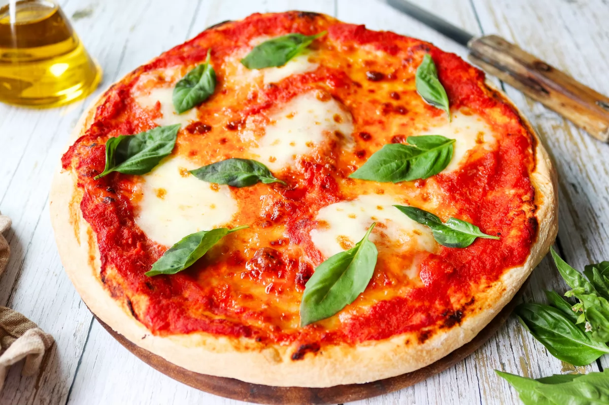

Pizza margarita

Ingredientes
Para la masa
- 500g de harina
- 1 sobre de levadura
- 250ml de agua
- Sal
- Aceite de oliva
Para la cobertura
- Salsa de tomate
- Mozzarella
- Albahaca
- Aceite de oliva
Preparación
- Mezcla los ingredientes para la masa y deja reposar durante 1 hora.
- Extiende la masa, cubre con salsa de tomate, mozzarella y albahaca.
- Hornea a 220°C durante 15 minutos.
Dificultad:mediaCocina:italianaVegetariana:síCelíacos:noAnticáncer:no
‚úîüç≥ü•©
Autor:Anónimo